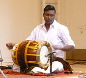
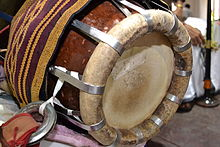

The Thavil is a barrel shaped drum from Tamil Nadu. It is used in temple,
folk and Carnatic music, often accompanying the nadaswaram. The thavil and the
nadaswaram are essential components of traditional festivals and ceremonies in
South India.
In folk music contexts, a pair of wider, slimmer sticks are sometimes used.
Thanjavur is famous for thavil, so called Thanjavur Thavil. In Kollywood Filmi
songs thavils are mostly used, Notable movies: "Thillaanaa Mohanambal",
"Paruthiveeran", "Karagattakaran".

History:
Thavil is a traditional musical instrument of the ancient city of Thanjavur in
Tamil Nadu. It is an integral part of the Carnatic music in Thanjavur.
Physical components:
The thavil consists of a cylindrical shell hollowed out of a solid block of
jackfruit wood. Layers of animal skin (water buffalo on the right, goat on the
left) are stretched across the two sides of the shell using hemp hoops attached
to the shell. The right face of the instrument has a larger diameter than the
left side, and the right drum head is stretched very tightly, while the left
drum head is kept loose to allow pitch bending. The larger face is higher in
pitch than the smaller face.

Methods of use / Posture:
The instrument is either played while sitting, or hung by a cloth strap (called
nadai) from the shoulder of the player. The right head is played with the right
hand, wrist and fingers. The player usually wears thumb caps on all the fingers
of the right hand, made of hardened glue from maida flour. The left head is
played with a short, thick stick made from the wood of the portia tree. It is
not uncommon for left-handed players to use the opposite hands, and some
nadaswaram groups feature both a right- and a left-handed thavil player.
Veteran thavilists:
Some master thavil players:
Valangaiman A. Shanmugasundaram Pillai
Valayapatti A. R. Subramaniam
Haridwaramangalam A. K. Palanivel
Thedchanamoorthy - Jaffna
Needamangalam Meenakshi Sundaram Pillai
Thirunageshwaram Subramaniana Pillai
Bhusurapalli Adiseshaiah
Iluppur Panchami
Kumbakonam Thangavel Pillai
Natchiarkoil Raghava Pillai
Needamangalam Shanmugavadivel
Valangaiman Shanmugasundaram Pillai
Thiruvalaputhur T A Kaliyamurthy
Kalaimamani Pondicherry K. Krishnamoorthy
Kalaimamani Pondicherry Pon. Shanmugam Thavil vidwan and Professor
Tanjore T R Govindaraj
Kovilur K.V.Palanivel an eminent Thavil vidwan and professor
Thirucherai T.G.M.Radhakrishnan
Thirurameshwaram T.B.Radhakrishnan.M.com.
P Karunakaran Polur Thavil ,& Thabela Vidwan and Manufacturing
Karuna Murthy
Muthukumaran.S
Maniyachi Dakshinamoorthy